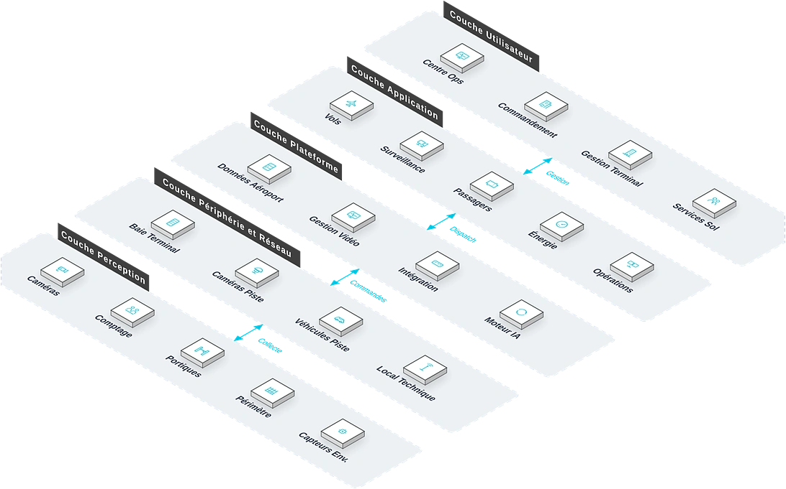

Pour les exploitants aéroportuaires et les autorités de l'aviation, une solution intelligente couvrant service aux passagers, sûreté, exploitation et gestion de l'énergie, qui répond aux points de douleur clés que sont la faible efficacité du traitement des passagers, le contrôle dépendant du facteur humain et l'utilisation non optimale des ressources, améliorant la satisfaction passagers et l'efficacité opérationnelle.
Vue d'ensemble
Fournit aux exploitants aéroportuaires et aux autorités de l'aviation une solution intelligente couvrant service aux passagers, sûreté, exploitation et gestion de l'énergie, répondant à la faible efficacité du traitement des passagers, au contrôle manuel et à l'utilisation non optimale des ressources, et améliorant satisfaction et efficacité opérationnelle.
Applicable à : Aéroports civils, aéroports de fret, terminaux, aires de stationnement, zones de fret.
- Conforme aux normes de sûreté OACI, multilingue et multi-devises
- Conception modulaire permettant une construction par phases, réduisant le risque d'investissement initial
- Enregistrement/dépôt/embarquement en libre-service réduisant les files d'attente
- Attribution intelligente des postes de stationnement et régulation des véhicules de piste optimisant les ressources
Bénéfices : Efficacité accrue du traitement des passagers, sûreté renforcée, meilleure utilisation des ressources et revenus commerciaux accrus.
Défis Métier
Dans l'exploitation aéroportuaire, les clients font souvent face à une faible efficacité du traitement des passagers, un filtrage dépendant du manuel et une coordination complexe des ressources ; ils ont besoin d'un système intelligent multi-scénarios conforme aux normes OACI, déployable par phases et à la convergence de données unifiée.
Traitement des passagers peu efficace
Les files d'enregistrement, de filtrage et d'embarquement dégradent l'expérience passager.
Filtrage dépendant du manuel
La lecture manuelle des images est lente et inconstante, créant un risque pour la sûreté.
Informations de vol désynchronisées
Les silos de sous-systèmes retardent la diffusion des mises à jour vers passagers et équipes.
Ressources au sol mal équilibrées
L'affectation des postes et la coordination des véhicules reposent sur l'expérience ; aux heures de pointe, pénuries et capacités inoccupées coexistent et pèsent sur le respect des rotations.
Ponctualité et expérience sous pression
Traitements lents, informations en retard et ressources mal allouées : risques de retard aux pics et réputation de service entamée.
Flux passager en libre-service
Enregistrement, dépôt de bagages et embarquement autonomes sont nécessaires pour réduire les files.
Pilotage intelligent des ressources
L'affectation intelligente des postes et la coordination des véhicules au sol sont nécessaires pour équilibrer l'usage.
Scénarios typiques :
Rôles concernés : Équipes d'exploitation aéroportuaire, agents de filtrage, agents au sol, personnel de service passager.
Architecture
Aéroport Intelligent repose sur une topologie métier à cinq couches : Centre Ops, Commandement et autres bureaux utilisent les applications quotidiennes comme Vols et Surveillance, coordonnés par la couche plateforme ; les équipements de périphérie (Baie Terminal, Caméras Piste) sur site raccordent les équipements de perception (Caméras, Comptage) : les données montent vers la plateforme et les commandes descendent jusqu'au terrain.

Disposition métier : la couche utilisateur regroupe les bureaux (Centre Ops, Commandement…) ; la couche application porte les fonctions quotidiennes ; la plateforme fournit Données Aéroport et Gestion Vidéo ; la couche périphérie et réseau situe les équipements sur site (Baie Terminal, Caméras Piste…) ; les équipements de perception sont déployés sur Caméras, Comptage et le terrain.
Modules clés
Libre-service passager
Enregistrement, dépôt de bagages et embarquement biométriques réduisent les files.
Filtrage intelligent
Rayons X, portiques de filtrage et lecture d'images assistée par IA élèvent l'efficacité et la constance du contrôle.
Affectation des postes & véhicules
Affectation intelligente des postes et coordination des véhicules au sol équilibrent l'usage des ressources.
Suivi du fret
Suivi du fret et supervision de l'entrepôt visibles de bout en bout.
Pilotage AOC
Le tableau de bord suit en temps réel vols, flux passagers et état de sûreté.
Capacités d'intégration :
- Tous les sous-systèmes synchronisent leurs données en temps réel vers le centre d'exploitation AOC
- Les anomalies alertent automatiquement les services au sol concernés
- Prise en charge multilingue et multi-devises
Avantages et livraison
Avec les normes de sûreté de l'OACI et une capacité de livraison modulaire, nous aidons à améliorer le traitement des passagers et l'usage des ressources, via une construction par phases, l'intégration des systèmes, la mise en service et la recette, puis un accompagnement opérationnel continu.
Avantages différenciants
Conforme aux normes OACI
Conçu et réalisé selon les normes de sécurité de l'OACI : systèmes sûrs et conformes.
Multilingue et multi-devises
Répond aux besoins d'exploitation internationale des grands hubs.
Construction modulaire par phases
Réalisation par étapes au rythme de l'investissement, avec un risque ponctuel réduit.
Expérience en Infrastructures de Transport
Fondée sur les livraisons ELV et sécurité de grands projets de transport (pôle d'échange Mile 2, gare de Kano) : forte réutilisation sur scénarios similaires, risque de livraison réduit.
Intégration AOC unifiée
Tous les sous-systèmes rejoignent le centre d'exploitation de l'aéroport (AOC).
Expérience passager améliorée
Enregistrement libre-service, guidage intelligent et diffusion d'informations intégrés.
Processus de mise en œuvre
Étude des besoins
Recenser la taille de l'aéroport, le réseau de lignes et les phases.
Conception
Plans par phases et par modules.
Réalisation par phases
Priorités : services passagers, sûreté, exploitation.
Intégration
Raccorder les sous-systèmes au centre AOC.
Essais et réception
Tests conjoints tous scénarios et réception.
Formation et remise
Former le personnel d'exploitation et de gestion par poste.
Garantie de service
Valeur client
Débit passagers accru, sécurité renforcée, meilleure utilisation des ressources de l'aéroport et revenus commerciaux en hausse.